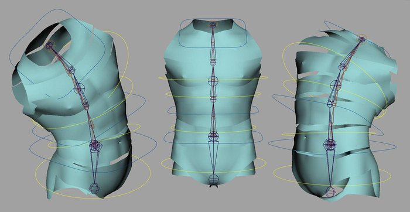

Introduction to rigging in Maya - Part 2 - Rigging a human torso
Previous chapters
In chapter 2 of our free Maya rigging tutorial series, the super-talented Jahirul Amin reveals how to create a rig for a human torso using Maya 2014
A Maya directory (3dt_rigging) has been supplied containing all scene files and scripts used in this project.
Following on from my introduction to rigging, we will now take on the task of creating a flexible torso rig for our character. I think it is safe to say that the torso is the center of the movement. The arms, legs and the head are all carried by the torso and therefore it is imperative that we get it right.
Your spine consists of 24 vertebrae: 7 cervical, 12 thoracic and 5 lumbar (minus the coccyx and the sacrum). In CG, it's good to try and simplify the real so we do not overcomplicate the rig or overwhelm the animator. 24 controls to control the spine for example may drive the animator a little cookoo. I'm not saying never try to fully replicate reality in CG, it's just that sometimes we need only create the illusion of reality to fool the audience. In this tutorial, we will neither follow the natural s-shape of the spine nor place our Maya joints towards the dorsal portion of the torso. The reason for not creating the s-shape is so that we can use one axis to create a clean twist as opposed to having to use a combination of 2 axes. The pose of the mesh will also dictate if this is possible or not. If you had a very hunched over character, Quasimodo-style for example, it wouldn't work and you would need to follow the shape of the back. And the reason for not placing the Maya joints at the dorsal portion of the torso is because placing them closer to the middle of the torso usually creates better deformation. None of this is set in stone so please do experiment. The only way to figure out what works best for you is to go through a process of trial-and-error.
The spine we will create will give us the benefits of both Forward Kinematics (FK) and Inverse Kinematics (IK). This setup is actually based on Jason Schleifer's spine from his Animator Friendly Rigging series. If you haven't checked it out before then I highly recommend you do so. It is an absolute treasure trove of rigging advice.
Before we start the rig, I want to quickly mention the importance of naming conventions and consistency. Rigs can start off simple but very quickly become pretty complex. It is therefore imperative that very early on we put a structure in place to keep our rigs in order. The first thing we can do is come up with a naming convention for all object types. For example, all joints will end with a suffix of _jnt, all controls will end with a suffix of _ctrl and so on. It goes for prefixes also. All right-side joints or controls will start with r_ and all left-side joints and controls will start with l_. This will also make the rig easily understandable by other riggers should they need to tinker with your rig.
Next comes consistency. To make the rig as efficient as can be for the animator, we can keep a few things in mind. Firstly, we can decide which rotation axes will create which type of motion throughout the entire rig. For example, I am going to set rotate X as the attribute that will create all flexion/extension. This way, the animator can be solely working in the Graph Editor and whether he has the arm, leg or spine selected, he/she will know that by editing the rotate X, he will be creating flexion. Now this may all sound a little tedious but being organized is what will make the difference between a clean and a messy rig.
Rant over, let's create a torso rig...
Creating the IK spine joints
In the side view, go Skeleton > Joint Tool. Using the left mouse button (LMB), create the first joint just below the belly button and in the centre of the geometry. Hold down the Shift key on the keyboard (this will create a straight joint chain) and continue to create the rest of the spine by making 6 additional clicks. When you have drawn your joint chain, hit Enter on the keyboard to exit the tool. Now, in the Outliner, open up the joint chain and select all but the root joint in the chain. Pop a value of 8 (you'll have to experiment with the value) into the Translate X channel in the Channel Box to make all the joints of equal length. Select only the root joint and translate it around until you are happy with the position of the spine. Here comes the boring but ESSENTIAL part: renaming the joints. From root to tip, rename the joints as follows: spineA_IK_jnt, spineB_IK_jnt, spineC_IK_jnt, spineD_IK_jnt, spineE_IK_jnt, spineF_IK_jnt and spineEnd_IK_jnt.
Now, select spineEnd_jnt and hit Ctrl+D to duplicate it and then Shift+P to un-parent it from the current joint hierarchy. Rename it chest_IK_jnt. Hit Ctrl+D to duplicate it and rename the new joint midSpine_IK_jnt. Hold down the V key to activate the Point Snap tool and snap the new duplicated joint to spineD_IK_jnt. Duplicate that new joint, rename it hip_IK_jnt and then point snap it to spineA_IK_jnt. Increase the Radius of the 3 new joints in the Channel Box to make them easily selectable.
The IK spine joints in place and tweaking the radius to make some of the joints more easily selectable
Creating the low-res mesh
It's a good idea to test the rig as we go. That way we can iron out any rough spots early on. Simply looking at the joints will not always reveal the odd random twist here or the slight pop there that could be occurring. To test the rig, we will simply chop up the mesh and then simply parent the chopped up geometry to the joints. This will in turn give us a low-res rig that will be usable by the animator to get quick feedback for their animation rather than having to rely on playblasting. Now there are lots of ways to do this and I use different methods depending on the mood I'm in. I'll show you one example here but feel free to experiment. As long as the end result is the same, the process of getting there shouldn't be too much of a problem.
So firstly, duplicate the model and hide the original by hitting Ctrl+H. As we are focusing on the torso, go into face mode and simply delete all the geometry of the neck, head, arms and legs (not the pelvis). Try and keep everything symmetrical as you do this. Now, select all the faces between spineA_IK_jnt and spineB_IK_jnt (use the topology to guide you if possible) and in the modeling menu set (F3), go Mesh > Extract. Next, select the faces between spineB_IK_jnt and spineC_IK_jnt and repeat the step. Continue to do this until you have 7 individual mesh parts. Once complete, select all the parts and go Edit > Delete By Type > History. After this, rename the geometry segments from root to tip: hip_proxy_geo, spineA_proxy_geo, spineB_proxy_geo, spineC_proxy_geo, spineD_proxy_geo, spineE_proxy_geo and spineF_proxy_geo.
After this, simply select the relevant geometry segment and parent it under the corresponding joint. Rotating the joints should now affect the geometry. If you like, you could also reduce the density of the proxy geometry to create a faster rig. As long as the volume of the low-res mesh matches the main model then you should be good to go.
Parenting geometry to the skeleton to get a good idea of how the final model will articulate
Adding the Spline IK
Now go Skeleton > IK Spline Handle Tool (Options) and leave everything as it is except for the Number of Spans. Increase this to 2. Then, in the Viewport, click on spineA_IK_jnt and then on spineEnd_IK_jnt. If you are doing this in the Outliner, activate the tool, select spineA_IK_jnt, and hold down the Ctrl and then select spineEnd_IK_jnt. Rename ikHandle1 to spine_IK and curve1 to spine_CRV.
Spline IK works different to the usual IK in that it is the curve that deforms the joints, not the IK handle itself. And to deform the curve, we need to go into component mode and translate the CVs, which isn't very handy for the animator. We could create a cluster for each CV and deform the skeleton in that manner. I am not going to use that method for this tutorial but here is how you can, should you want to experiment: select a CV from the curve (hit F8 to go into component mode) and then go Create Deformers > Cluster. You could now parent the cluster under a control, which the animator could easily grab.
I'm going to use a method that I learned from Jason Schleifer's Animator Friendly Rigging series of skinning the curve directly to some joints. This is one of the many golden nugget tricks you can pick up from his amazing series so I highly recommend checking it out. To do this, simply select chest_IK_jnt, midSpine_IK_jnt, hip_IK_jnt and spine_CRV. With the 4 selected, go Skin > Bind Skin > Smooth Bind (Options) and use the following settings: Bind to: Selected joints, Bind Method: Closest Distance, Skinning Method: Classic Linear and Normalize Weights: Interactive. Everything else can stay as it is for now. When we get into the final skinning of the character, we will look at these settings in more detail. Hit Apply and you should now be able to deform the spine using the 3 joints.

Adding the Spline IK to drive the joint chain
Using a Python script to create the controls
Next we need some controls for the driving joints. We will be using the method of creating controls that I went through in the previous tutorial, only we will be automating the process using a Python script. Although you can rig without any scripting, I find that some knowledge can hugely increase your productivity, especially on repetitive tasks such as creating controls. The manner in which I picked up an understanding of how to structure a script was to look at the History in the Script Editor and pretty much copy and paste the commands. In the Script Editor, you can also reveal every action by going History > Echo all commands. Although you will get the MEL commands used, you can very easily rework them to Python by using the Maya Help Docs (F1) or stick to MEL if that works for you. The reason for my choice of Python is that it is easily transferable to other packages. So this is the Python script we are going to use and a brief explanation of how it works:
#create controls script
"""
How to use:
1. Select all the joints you want to add controls to, and execute the script.
"""
import maya.cmds as cmds
sl = cmds.ls(sl=1)
for s in sl:
ctrlName = s.replace("_jnt", "_ctrl")
ctrl = cmds.circle( nr=(0, 1, 0), r=1, n=ctrlName)[0]
group = cmds.group(ctrl, n=ctrl + "_auto")
offset = cmds.group(group, n=ctrl + "_offset")
cmds.parentConstraint(s, offset, mo=0)
cmds.delete(cmds.parentConstraint(s, offset))
cmds.parentConstraint(ctrl, s, mo=0)
So this is how it works: you first need to select all the joints that you wish to add controls to (they need to end with a suffix of _jnt). The script will then create a circle, copy the joints' name but replace the _jnt with a suffix of _ctrl. The circle will be grouped twice to create the control hierarchy using the _auto and the _offset nodes as explained in the previous tutorial. The _offset node will then be parent constrained under the relevant joint (with Maintain Offset disabled) to get it into the correct place and then that constraint is deleted. Finally, the joint is parent constrained to the control. Feel free to modify the script as needed. You could also save this script to the Shelf to use it more swiftly. I'll be editing the script here and there where needed as I go. For example, I may edit the line:
ctrl = cmds.circle( nr=(0, 1, 0), r=1, n=ctrlName)[0]
to
ctrl = cmds.circle( nr=(0, 1, 0), r=10, n=ctrlName)[0]
This would increase the radius of the control circle from 1 to 10. Or I may edit the final line from:
cmds.parentConstraint(ctrl, s, mo=0)
to
cmds.orientConstraint(ctrl, s, mo=0)
cmds.pointConstraint(ctrl, s, mo=0)
This will constrain the joint to the control using orient and point constraints as opposed to a single parent constrain. FK joints will only need to be orient constrained to the relevant controls so we will again edit this script to suit our needs. Test it out on a few joints beforehand.
A quick Python script to speed up the process of creating controls
Creating the IK spine controls
So let's apply this to our IK control joints. First open up the Script Editor (Window > General Editors) and create a new Python tab hitting Ctrl+T or holding down the Right Mouse Button in the Input window and selecting New Tab. When the Source Type window pops up, make sure to select Python. Drag the createControls.py script into the Input section of the Script Editor or go File > Load Script (Ctrl+O). You will find the script in the Script folder within the 3dt_rigging project folder that comes with this tutorial.
Now select hip_IK_jnt, midSpine_IK_jnt, chest_IK_jnt and execute the script by going Command > Execute (Ctrl+E). You can also execute the script by highlighting all the text and hitting Enter on the Numpad. The 3 controls should now be created and the joints parent constrained to them. Should you wish to edit the shape of the controls or the placement to make them easily selectable, do so in component mode (F8). Whatever you do, do not edit the position, rotation or scale in object mode as this will stop you from being able to revert back to the default pose.
The IK controls created using the Python script
Adding the IK twist
Currently, we cannot twist the spine so let's quickly fix this. To do this, select the spine_IK and open up the Attribute Editor (Ctrl+A). Open up IK Solver Attributes and then Advanced Twist Controls. Turn on Enable Twist Controls. To control the twist through the hip_IK_ctrl and the chest_IK_ctrl, we need to set the World Up Type to Object Rotation Up (Start/End). Set the Up Axis to Negative Z as the back of our character is facing that direction in the Maya world. Now select any of the spine_IK joints and you will notice that the Z-axis is facing forwards so we need to set the Up Vector and the Up Vector 2 to 0, 0, -1 as our spine's Up is in the opposite direction. Now type hip_IK_ctrl into the World Up Object box and chest_IK_ctrl into the World Up Object 2. The last thing we need to do is set the Twist Value Type to Start/End.
You should now be able to twist the hip_IK_ctrl and the chest_IK_ctrl and get a nice falloff running down the spine.
Using the Advanced Twist Controls to allow for twisting
Adding some stretch
Adding some stretch control will allow the animator to push the poses should he/she wish to or need to. To add the stretch we will divide the length of the spine_CRV by itself (which will give us an initial value of 1) through a multiply divide node and then feed the output of that value into the scale X of the spine_IK joints (which also has an initial value of 1). So every time the spine_CRV changes its length, the new length will divide itself by the old length and the offset value will be fed into our spine creating the squash and stretch.
Okay, so first we need to find out the length of our spine_CRV. To do so, select the curve and in a Mel window, type: arclen –ch 1;
This will make accessible the curveInfo1 node that houses the Arc Length (jot this number down). To find this, open up the Attribute Editor and you will find it as the right-most tab. You could also go into the Hypershade (Window > Rendering Editors) with the spine_CRV selected and go Graph > Input and Output connections. Rename the curveInfo1 node to spineInfo and then in the Hypershade, go Create > General Utilities > Multiply Divide. Double-click the Multiply Divide node to open it up in the Attribute Editor and set the Operation to Divide. Now in the Input 2 first window, pop in the value of the Arc Length that you jotted down earlier. Back in the Hypershade, Hold the right mouse button (RMB) over the Output arrow on the spineInfo node and select arcLength. You should get a stringy bit attached to the pointer. Now hold the LMB over the Input arrow of the Multiply Divide node and go input1 > input1X. Now, whenever the curve changes its length, the new length will be divided by the old length.
We now need to feed this into the scale of our joints. Select spineA_IK_jnt and in the Hypershade, go Graph > Add Selected to Graph. Now hold the RMB over the Output arrow of the Multiply Divide node and go output > output. Hold the LMB over the Input arrow of spineA_IK_jnt and go Scale > ScaleX. We need to do the same connection to the remainder of the spine_IK joints (minus spineEnd_IK_jnt). To quickly do this, go into the Script Editor and find and copy the following line from the History:
connectAttr – force
multiplyDivide1.outputX
spineA_IK_jnt.scaleX
Open up a new Mel tab and then paste this line 5 times into the Input window (one line for each additional joint). Then simply, replace the name of the joints to correspond with the remaining joints; so it will read like so:
connectAttr – force
multiplyDivide1.outputX
spineB_IK_jnt.scaleX;
connectAttr – force
multiplyDivide1.outputX
spineC_IK_jnt.scaleX
connectAttr – force
multiplyDivide1.outputX
spineD_IK_jnt.scaleX;
connectAttr – force
multiplyDivide1.outputX
spineE_IK_jnt.scaleX;
connectAttr – force
multiplyDivide1.outputX
spineF_IK_jnt.scaleX;
Go Command > Execute and abracadabra, we are done. Last thing to do is rename the Multiply Divide node to spine_md. If you wanted, you could add some volume preservation to the rig but for this character, I personally think that would be overkill.
Adding squash and stretch to allow for more dynamic poses
FK joints and the controls
The IK setup will be driven by an FK joint chain so let's pop that in now. Turn on Point Snapping or hold down the V key on the keyboard and in the side view, use the Skeleton > Joint Tool to create a 4-joint chain. Start by point snapping to the root joint of the IK chain (make sure to click slightly away from the joint so it creates a new chain, rather than continuing the IK chain), then to every other joint and then to the end joint. Rename the joints from root to tip: spineA_FK_jnt, spineB_FK_jnt, spineC_FK_jnt and spineEnd_FK_jnt.
We now want to create flexion using the positive rotate X attribute, rather than the negative rotate Y that it is currently set to. To do this, select spineA_FK_jnt and go Skeleton > Orient Joint Tool (Options). We'll be coming in here often to set the orientation of our joints. For the FK spine, we can simply turn on Orient Joint to World and hit Apply. Try rotating the joints now and positive rotate X should give you flexion.
Now, let's add the controls. Edit the final line of the createControls.py script to read:
cmds.orientConstraint(ctrl, s, mo=0)
As the controls are to drive only the rotation of the joints, this constraint will be best. Now select all the FK joints (minus spineEnd_FK_jnt) and Execute the script. Once the controls have been created, edit the shape of the controls in component mode to make them easily selectable. Remember: do not edit the shape in object mode. Next thing we need to do is create an FK hierarchy for our controls to mimic the FK behavior of the joints. We will do this through parenting. First parent spineC_FK_ctrl_offset under spineB_FK_ctrl and then parent spineB_FK_ctrl_offset under spineA_FK_ctrl.
Finally, we can connect the IK setup to the FK setup. To do this, first parent chest_IK_ctrl_offset under spineC_FK_ctrl and then parent midSpine_IK_ctrl_offset under spineB_FK_ctrl.
The final setup for the FK joints and the controls
Adding an extra hip control
Currently the hip control has an effect on the lower portion of the spine; let's add an extra control to only affect the hip itself. First duplicate hip_IK_jnt, rename it hip_FK_jnt and then delete the parentConstraint that lives underneath it in the Outliner. Duplicate the new joint, rename it hipEnd_FK_jnt, lower it down slightly and then parent it under hip_FK_jnt. This joint is not necessary, as all the rotations will happen from hip_FK_jnt, but I just like it visually to represent the hip. Now parent hip_fk_jnt under hip_IK_jnt. Next select hip_fk_jnt and run the createControls.py script to create an orient constraint between the control and the joint. Reshape the control to make it easily selectable and then parent hip_FK_ctrl_offset under hip_IK_ctrl. We can now use the hip_IK_ctrl as the main driver and then use the hip_FK_ctrl to add some offset if needed. This is just another way of adding extra flexibility to the rig and it gives more choices for the animator.
Adding an extra hip control
Creating the COG control
The last control we need to add is the COG (Centre of Gravity) control; the control that carries the entire torso. In the top view, go Create > CV Curve Tool (Options) and set the Curve degree to 1 Linear. Now draw a unique shape of your choice around the world center, making sure it is a closed shape, and exit the tool when complete by hitting Enter on the keyboard. You can use grid snapping (hold X) or point snapping (hold V) to make it easier and more precise. Rename the curve COG_ctrl and then hit Ctrl+G twice to group it to itself twice. Rename the top-most group COG_ctrl_offset and the next group down COG_ctrl_auto.
Now we need to get the control into place. To do this, parent COG_ctrl_offset under hip_IK_ctrl and then zero out the translate and rotate values in the Channel box. This should snap the COG_ctrl_offset into place. Now, un-parent COG_ctrl_offset by hitting Shift+P. Reshape COG_ctrl so it is easily selectable, if needed, in component mode.
Let's piece this altogether now. First, select spineA_FK_ctrl, then Shift-select spineA_FK_jnt and go Constrain > Point. Then parent hip_IK_ctrl_offset and spineA_FK_CTRL_offset under COG_ctrl. Select spineA_IK_jnt, hip_IK_jnt, midSpine_IK_jnt, chest_IK_jnt and spineA_FK_jnt and hit Ctrl+G. Rename this new group spine_jnt_grp. Select spine_IK and spine_CRV and hit Ctrl+G. Rename this group spine_doNotTouch_grp. Now select spine_jnt_grp and spine_doNotTouch_grp and hit Ctrl+G. Rename this group spine_rig_grp. The last thing to do is to select spine_CRV, open up the Attribute Editor and disable Inherits Transform. This will make sense later on when we add the globalSRT control; the main control used to scale, rotate and translate the character into the starting position for the shot. For now, we will leave the rig here.
Next time, we'll create the rig for the neck and head and also add the globalSRT control. Happy rigging.
Adding the COG_control to drive the entire torso and cleaning up the Outliner
Top Tip: Lock and hide attributes and color controls
A good idea is to lock and hide attributes that you wish the animator not to set animation keys on. For example, the FK controls of the spine are not to be translated or scaled, the IK controls are not to be scaled and so on. To stop the animator keying these attributes, we can lock and hide them. Simply, highlight the channels you wish to lock and hide in the Channel Box and hold down the RMB. When the menu window appears, drag-and-drop the cursor over Lock and Hide Selected. If you need to bring the attributes back, you can go Edit > Channel Control in the Channel Box menu or Window > Channel Control. To color the controls, select it and open up the Attribute Editor. Scroll down to Display > Drawing Overrides, turn on Enable Overrides and then use the Color slider.
Hiding and locking attributes we wish the animator not to key, and color coding the controls